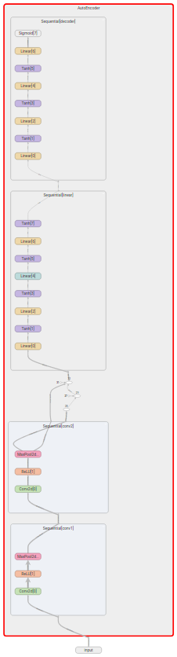
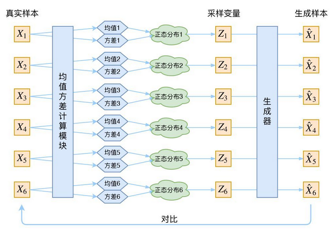
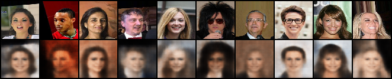
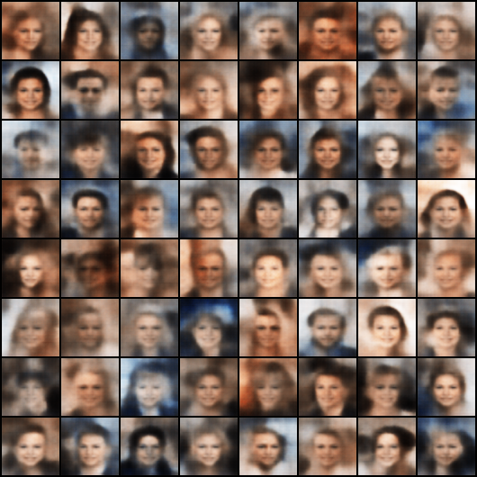

项目地址
AutoEncoder简介
autoencoder就是自动编码器，它的原理就不做介绍了网上有很多，简单的说就是一种自学习的无监督学习算法，它的输入与输出相同。我理解就是autoencoder能够学习数据的内部特征，因此这个算法常常被用来做数据降维、特征筛选和图像去噪音。我最开始接触到自动编码器是在ABB中国研究院实习的时候，当时带我的博士让我做一个基于机器学习的齿轮箱故障检测的项目，我就是用到了自动编码器来对震动数据的频谱进行降维。我的硕士论文也用到了autoencoder，说起来和这个算法还是有些缘分的。
最近working from home，看了蛮多的有趣的开源项目，发现autoencoder的应用还是非常广泛的，之前很火的DeepFake的基本原理竟然也是基于autoencoder，因此我想自己尝试训练一个autoencoder对人脸进行一个生成任务。下面我们从模型结构、数据加载、模型训练、生成结果四个部分来对其进行说明。
模型结构

我做这个模型是预想能够用3个数字生成人脸的，因此encoder的结构设计成先使用卷积层与池化层先将3×60×60的图片编成32×15×15的特征图。之后经过四层fc层，输出神经元个数为3。decoder的目的是想将3个神经元恢复成原来的3×60×60的图像像素，因此设计了四层的fc，输出大小就是3×60×60。模型结构设计好后，就要编写前向传播的过程，我们输入整个autoencoder中的应该是batch_size×C×W×H的图像数据，首先经过encoder变成3,之后经过decoder进行恢复，注意经过卷积和池化层的特征图需要进行拉伸后放入fc层中，这个过程使用view()即能够实现。
整个模型的设计的代码如下，我们将模型设计和前向传播都封装进名为AutoEncoder的类中：
import torch.nn as nn
# 定义自编码器的网络结构
class AutoEncoder(nn.Module):
def __init__(self):
super(AutoEncoder, self).__init__()
# self.encoder=nn.Sequential( #->(3,60,60)
###############################################################
self.conv1 = nn.Sequential(
nn.Conv2d(
in_channels=3,
out_channels=16,
kernel_size=3,
stride=1,
padding=1,
), # ->(16,60,60)
nn.ReLU(), # ->(16,60,60)
nn.MaxPool2d(kernel_size=2), # ->(16,30,30)
)
# ->(16,48,48)
###############################################################
self.conv2 = nn.Sequential(
nn.Conv2d( # ->(16,48,48)
in_channels=16,
out_channels=32,
kernel_size=3,
stride=1,
padding=1), # ->(32,30,30)
nn.ReLU(),
nn.MaxPool2d(kernel_size=2), # ->(32,15,15)
)
###############################################################
self.linear = nn.Sequential(
nn.Linear(32 * 15 * 15, 256),
nn.Tanh(), # 激活函数
nn.Linear(256, 64),
nn.Tanh(),
nn.Linear(64, 12),
nn.Tanh(),
nn.Linear(12, 3),
nn.Tanh()
)
# )
self.decoder = nn.Sequential(
nn.Linear(3, 12),
nn.Tanh(),
nn.Linear(12, 64),
nn.Tanh(),
nn.Linear(64, 128),
nn.Tanh(),
nn.Linear(128, 60 * 60 * 3),
nn.Sigmoid()
)
def forward(self, x):
x = self.conv1(x)
x = self.conv2(x)
x = x.view(x.size(0), -1)
encoded = self.linear(x)
decoded = self.decoder(encoded)
return encoded, decoded数据载入
用来训练的数据，我选择了CelebA人脸识别数据集，该数据集是由香港中文大学提供的，有20多万张人脸图片。由于我需要的模型要求不是很高，因此只用了其中5000张作为训练集。对于CelebA数据集的详细介绍可以参考：
CelebA
对数据集进行读取就比较简单，使用opencv就能够对图片进行读取并进行缩放，将每张图片都变成60×60的，得到图片的W×H×C的BGR结构，注意opencv读取的图片都是BGR，因此之后想要用显示图片时需要将BGR转为RGB才行。然后由于我们输入 网络中的图片默认应该是C×W×H的，因此之后我们还需要改变图片的维度。加载图片的代码如下：
# 加载数据集
def getTrainData(data_path="../celeba_select/"):
files = os.listdir(data_path)
imgs = [] # 构造一个存放图片的列表数据结构
for file in files:
file_path = data_path + "/" + file
img = cv2.imread(file_path)
if img is None:
print('错误! 无法在该地址找到图片!')
dim = (60, 60)
img = cv2.resize(img, dim, interpolation=cv2.INTER_AREA)
imgs.append(img)
return imgs模型训练
对于autoencoder的训练，使用MSE loss来作为loss，也就是衡量经autoencoder输出的10800个特征点与与原图的10800特征点之间的拟合程度。这里需要注意的就是要将原图先转为tensor之后再由60×60×3变为10800，这样才能和autoencoder的输出一起计算MSE，并进行反向传播对模型进行训练。训练好的模型保存在autoencoder.pkl中。模型训练的代码如下：
import torch
import torch.nn as nn
import numpy as np
import argparse
import cv2
import os
from torch.utils.tensorboard import SummaryWriter
from utils.model import AutoEncoder
#tb = SummaryWriter()
# 训练并反向传播
def trainOneBatch(batch: torch.FloatTensor, raw: torch.FloatTensor):
encoded, decoded = auto(batch)
#tb.add_graph(auto, batch)
loss = loss_function(decoded, raw)
optimizer.zero_grad()
loss.backward()
optimizer.step()
# 前向传播获得误差
def testOneBatch(batch: torch.FloatTensor, raw: torch.FloatTensor):
encoded, decoded = auto(batch)
loss = loss_function(decoded, raw)
return loss
# 加载数据集
def getTrainData(data_path="./celeba_select/"):
files = os.listdir(data_path)
imgs = [] # 构造一个存放图片的列表数据结构
for file in files:
file_path = data_path + "/" + file
img = cv2.imread(file_path)
if img is None:
print('错误! 无法在该地址找到图片!')
dim = (60, 60)
img = cv2.resize(img, dim, interpolation=cv2.INTER_AREA)
imgs.append(img)
return imgs
if __name__ == "__main__":
parser = argparse.ArgumentParser()
parser.add_argument('--lr', type=float, default=0.001, help='lr')
parser.add_argument('--batch_size', type=int, default=100, help='batch size')
parser.add_argument('--epoch', type=int, default=100, help='epoch size')
opt = parser.parse_args()
# 超参数
LR = opt.lr
BATCH_SIZE = opt.batch_size
EPOCHES = opt.epoch
# 获取gpu是不是可用
cuda_available = torch.cuda.is_available()
# 实例化网络
auto = AutoEncoder()
if cuda_available:
auto.cuda()
# 定义优化器和损失函数
optimizer = torch.optim.Adam(auto.parameters(), lr=LR)
loss_function = nn.MSELoss()
# 数据准备
imgs = getTrainData()
for i in range(EPOCHES):
# 打乱数据
np.random.shuffle(imgs)
count = 0 # count是为了凑齐成为一个batch_size的大小
batch = []
for j in range(len(imgs)):
img = imgs[j]
count += 1
batch.append(img)
if count == BATCH_SIZE or j == len(imgs) - 1:
# 列表转成张量，再转换维度
batch_train = torch.Tensor(batch).permute(0, 3, 2, 1) / 255 # batch,3,60,60
raw = batch_train.contiguous().view(batch_train.size(0), -1) # batch,3*60*60
if cuda_available:
raw = raw.cuda() # 数据变换到gpu上
batch_train = batch_train.cuda()
trainOneBatch(batch_train, raw) # 训练一个批次
batch.clear()
count = 0
batch.clear()
# 测试
for j in range(100):
batch.append(imgs[j])
batch_train = torch.Tensor(batch).permute(0, 3, 2, 1) / 255
raw = batch_train.contiguous().view(batch_train.size(0), -1)
if cuda_available:
raw = raw.cuda()
batch_train = batch_train.cuda()
# 调用函数获得损失
loss = testOneBatch(batch_train, raw)
batch.clear()
#tb.add_scalar('Loss', loss, i)
print(loss)
# 把训练的中间结果输出到本地文件
torch.save(auto, "autoencoder.pkl")模型最终结果
对于模型的应用，我想实现以下几个功能。
1.get_feature：输入一张图片，我们使用encoder将图片编码成3个数字。
2.invtrans：根据编码后的三个数字生成人脸
3.get_rand_face：随机生成人脸
代码如下：
import torch
import cv2
import random
from utils.model import AutoEncoder
class face_AE():
def __init__(self):
self.auto: AutoEncoder = torch.load("autoencoder.pkl")
def get_img(self, img_path):
image = []
img = cv2.imread(img_path)
if img is None:
print('错误! 无法在该地址找到图片!')
dim = (60, 60)
img = cv2.resize(img, dim, interpolation=cv2.INTER_AREA)
image.append(img)
img = torch.Tensor(image).permute(0, 3, 2, 1) / 255
return img
def get_feature(self, img):
encoded, decoded = self.auto(img)
return encoded
def invtrans(self, feature):
feature = x = torch.FloatTensor(feature)
img_re = self.auto.decoder(feature)
img_re = img_re.contiguous().view(3, 60, 60).permute(2, 1, 0).detach().cpu().numpy() * 255
cv2.imwrite("imgs/" + "im.jpg", img_re)
return img_re
def get_rand_face(self, length=3):
random_feature = []
for i in range(length):
feature = random.uniform(-1, 1)
feature = round(feature, 4)
random_feature.append(feature)
random_feature = torch.FloatTensor(random_feature)
self.invtrans(random_feature)
return random_feature
if __name__ == "__main__":
face = face_AE()
img_path = "./celeba_select/000199.jpg"
img = face.get_img(img_path)
feature = face.get_feature(img)
face.invtrans(feature)
face.get_rand_face()展示下通过随机数产生的人脸图像
emmm…..怎么说呢，随机数生成的人脸能看出是人脸的，感觉效果还行？
但是将原有图片先编码再解码出来的图片和与原来相差很大，而且生成的貌似都是女性的脸，这个问题还有待研究。
2020.4.16更新
最近研究了下其他人写的autoencoder，并且研究了下VAE，发现自己的模型结构设计的比较差，没有想到在decoder中使用反卷积操作。因此我将原来的AE模型结构改造成VAE，在VAE中encoder有两个，一个用来计算均值，一个用来计算方差。本质是在AE的基础上，对encoder的结果加上了一个高斯噪声，使得decoder的结果对于噪声的鲁棒性更好。VAE的示意图：

对原先的模型结构进行了修改，修改model.py
class AutoEncoder(nn.Module):
def __init__(self):
super(AutoEncoder, self).__init__()
latent_dim = 128
modules = []
in_channels = 3
hidden_dims = [32, 64, 128, 256, 512]
# Build Encoder
for h_dim in hidden_dims:
modules.append(
nn.Sequential(
nn.Conv2d(in_channels, out_channels=h_dim,
kernel_size=3, stride=2, padding=1),
nn.BatchNorm2d(h_dim),
nn.LeakyReLU())
)
in_channels = h_dim
self.encoder = nn.Sequential(*modules)
self.fc_mu = nn.Linear(hidden_dims[-1] * 4, latent_dim)
self.fc_var = nn.Linear(hidden_dims[-1] * 4, latent_dim)
# Build Decoder
modules = []
self.decoder_input = nn.Linear(latent_dim, hidden_dims[-1] * 4)
# 反转hidden_dims 这样是为了能够恢复成原来的图片size
hidden_dims.reverse()
for i in range(len(hidden_dims) - 1):
modules.append(
nn.Sequential(
nn.ConvTranspose2d(hidden_dims[i],
hidden_dims[i + 1],
kernel_size=3,
stride=2,
padding=1,
output_padding=1),
nn.BatchNorm2d(hidden_dims[i + 1]),
nn.LeakyReLU())
)
self.decoder = nn.Sequential(*modules)
# 单独设置一个final_layer是为了对最后一层进行特殊处理
self.final_layer = nn.Sequential(
nn.ConvTranspose2d(hidden_dims[-1],
hidden_dims[-1],
kernel_size=3,
stride=2,
padding=1,
output_padding=1),
nn.BatchNorm2d(hidden_dims[-1]),
nn.LeakyReLU(),
nn.Conv2d(hidden_dims[-1], out_channels=3,
kernel_size=3, padding=1),
nn.Sigmoid())
def encode(self, input):
"""
Encodes the input by passing through the encoder network
and returns the latent codes.
:param input: (Tensor) Input tensor to encoder [N x C x H x W]
:return: (Tensor) List of latent codes
"""
result = self.encoder(input)
result = torch.flatten(result, start_dim=1)
# Split the result into mu and var components
# of the latent Gaussian distribution
mu = self.fc_mu(result)
log_var = self.fc_var(result)
return [mu, log_var]
def decode(self, z):
result = self.decoder_input(z)
result = result.view(-1, 512, 2, 2)
result = self.decoder(result)
result = self.final_layer(result)
return result
def reparameterize(self, mu, logvar):
"""
Will a single z be enough ti compute the expectation
for the loss??
:param mu: (Tensor) Mean of the latent Gaussian
:param logvar: (Tensor) Standard deviation of the latent Gaussian
:return:
"""
if self.training:
# multiply log variance with 0.5, then in-place exponent
# yielding the standard deviation
sample_z = []
for _ in range(10):
std = logvar.mul(0.5).exp_() # type: Variable
eps = Variable(std.data.new(std.size()).normal_())
sample_z.append(eps.mul(std).add_(mu))
return sample_z
else:
return mu
def forward(self, input):
mu, log_var = self.encode(input)
z = self.reparameterize(mu, log_var)
if self.training:
return [self.decode(z) for z in z], mu, log_var
else:
return self.decode(z), mu, log_var
之后需要更改的一个非常重要的地方就是loss，之前在AE中，我是使用的MSE Loss,在VAE中设计了另外一种loss。VAE的LOSS由两部分组成。
1.BCE_LOSS：二分类交叉熵损失，用来衡量原图与生成的图片之间的像素误差
2.KLD_LOSS：KL散度，用来衡量潜在变量的分布与单位高斯分布之间的差异
VAE_LOSS = BCE_LOSS + KLD_LOSS
def loss_function(recon_x, x, mu, logvar):
# how well do input x and output recon_x agree?
BCE = 0
for recon_x_one in recon_x:
BCE += F.binary_cross_entropy(recon_x_one, x.view(-1, 3 * 64 * 64))
BCE /= len(recon_x)
KLD = -0.5 * torch.sum(1 + logvar - mu.pow(2) - logvar.exp())
KLD /= BATCH_SIZE * 3 * 64 * 64
return BCE + KLD
查看结果
人脸重构

随机生成人脸
